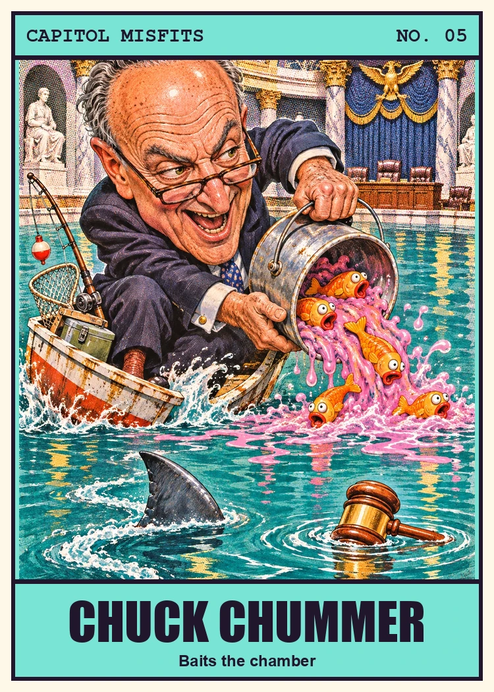

Capitol Misfits No. 05
Chuck Chummer
He dropped his gavel overboard. Something in the pool voted aye.
Made-up stats
- Chum deployed
- 2 buckets
- Sharks present
- 1
- Gavels recovered
- 0
Real facts about Chuck Schumer
- New York first elected Schumer to the U.S. Senate in 1998.
- In 2021 he became the first New Yorker to serve as Senate majority leader.